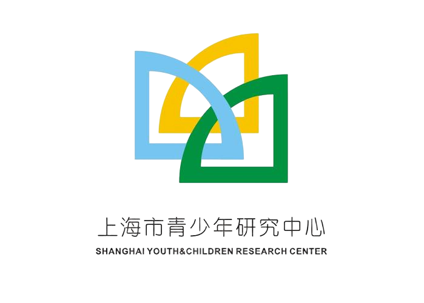
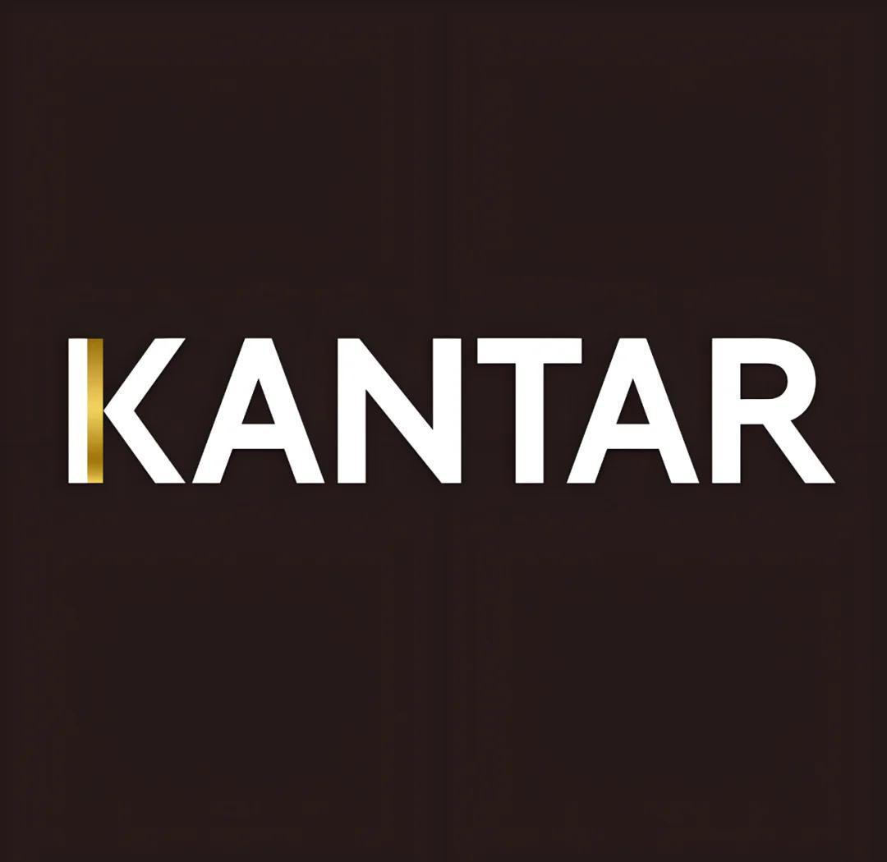
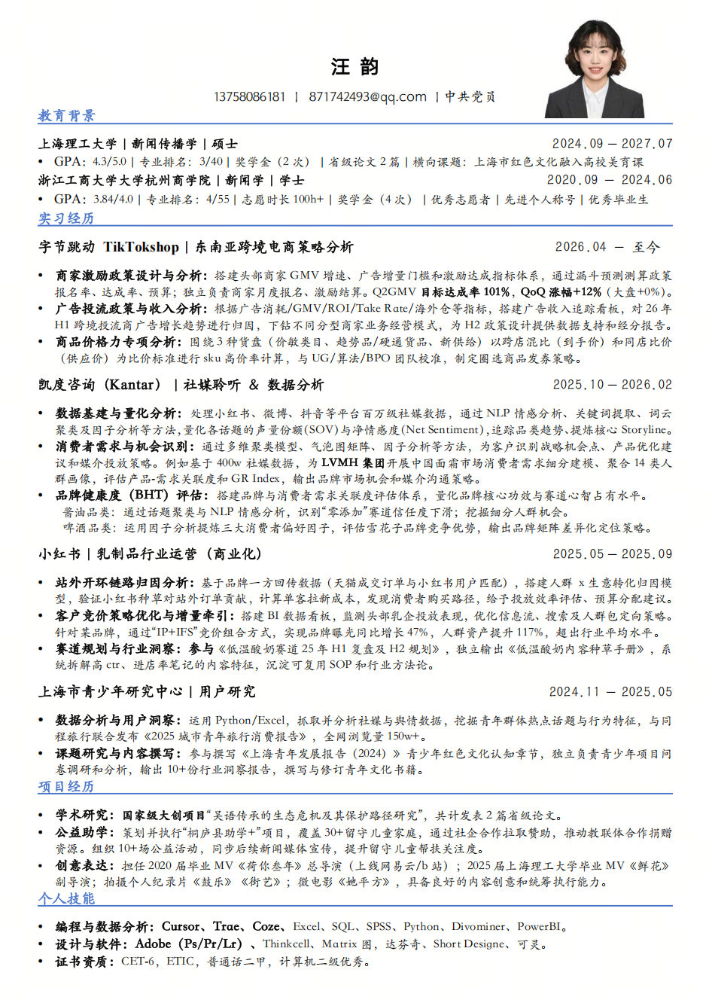

汪韵
数据策略 · 电商运营 · 社媒洞察 · 影片创意执行
具备 4 段相关实习经历，用数据讲述 storyline，用影片表达创意内容。
Part 02 / Experience
采编实习记者
Editorial教育频道 · 内容运营
Content
青少年群体 · 用户研究
User Research乳制品行业运营
commercialization
社媒聆听 · 数据分析
Social Listening东南亚跨境电商 · 策略分析
SEA Cross-Border四段核心实习经历，覆盖跨境电商、商业化运营、社媒研究与用户洞察。
东南亚跨境电商策略分析
聚焦东南亚跨境商家增长，围绕 GMV、广告收入与商家激励政策完成数据分析、策略设计和落地复盘。
社媒聆听 - 数据分析
围绕行业趋势与消费者洞察，处理百万级社媒数据，并用因子分析、分层聚类、情感分析等支持客户策略判断。
乳制品行业运营&策划（商业化）
以竞价广告为主，优化投放策略与内容种草打法，积累品牌心智与人群资产增长。
用户研究
聚焦青少年群体行为、心理与生活学习处境，结合社媒舆情和调查问卷，形成 10+ 份报告。
Part 04 / Projects
学术、公益、影像，实习之外的持续投入。
国家级大学生创新创业项目（结项），围绕吴语传承困境和保护路径开展 田野调查、问卷调查 与 深度访谈，最终发表 省级论文 1 篇、调研报告 2 篇。
项目覆盖 30+ 户留守儿童家庭，通过 社企合作 争取赞助资源，组织 10+ 场公益活动，并完成后续 媒体传播。
毕业 MV《荷你叁年》总导演（网易云音乐 / B 站上线）、《鲜花》副导演，独立拍摄纪录片《鼓乐》《街艺》与微电影《她平方》。
Resume & Contact
点击右侧，查看我的简历 One Page。
